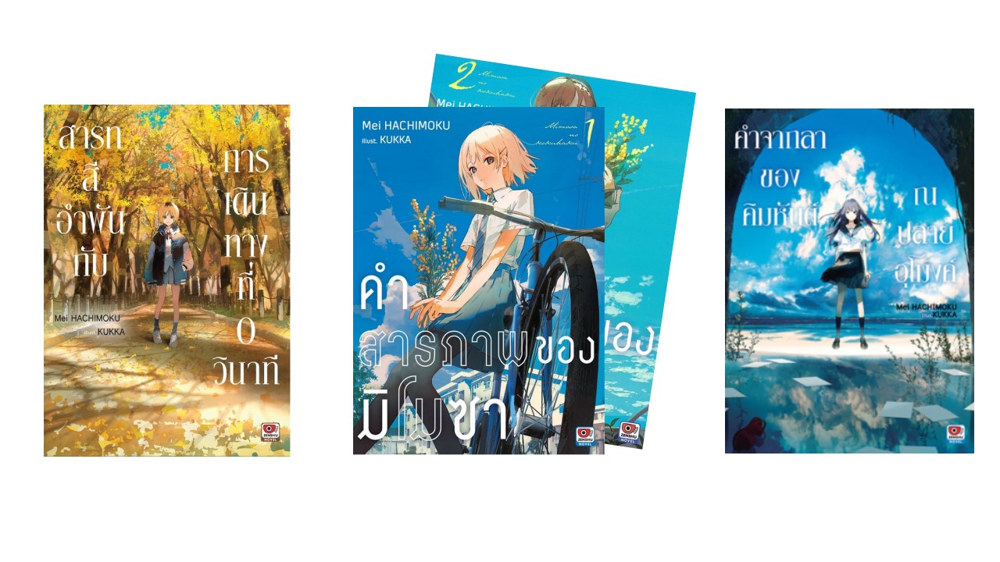
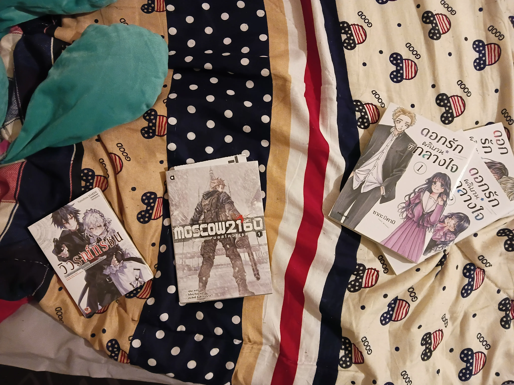
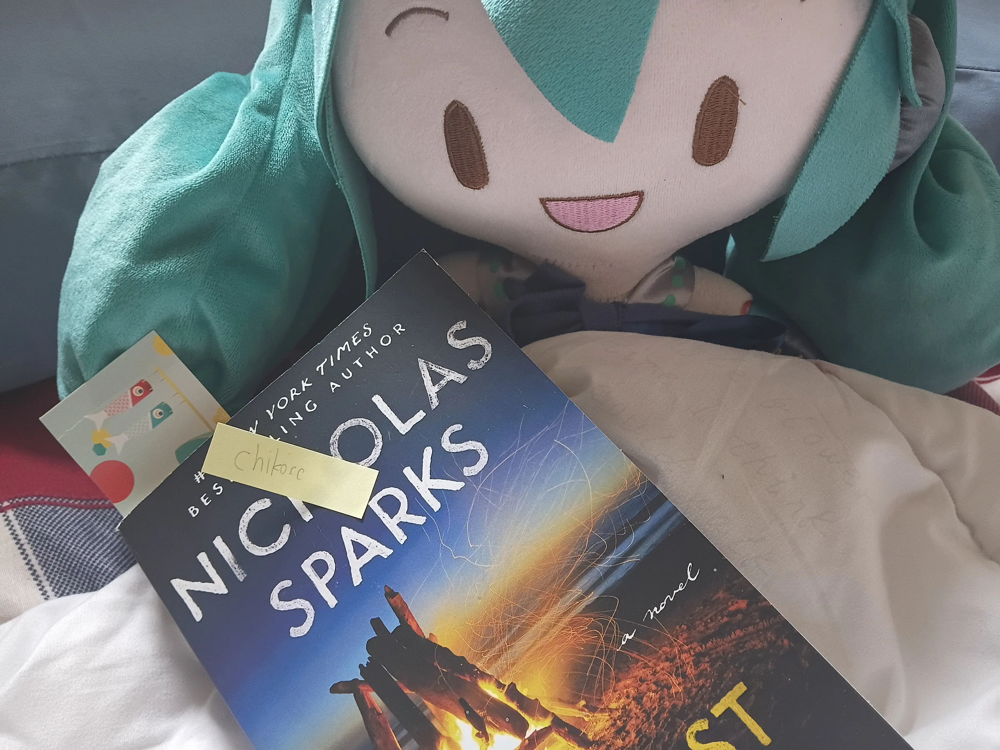

Halo!! Today I want to share some book stuff with you guys.
First of all, last month I bought a new novel! But before I talk about that, let me tell you a little bit about my reading history.
I've actually loved reading light novels for quite a while now. My very first light novel was *An Autumn in Amber, a Zero-Second Journey* by Mei Hachimoku. After finishing that book, I started reading more of his works, and became a pretty big fan of his writing.
Sadly, my house got flooded last year, and I lost all of my light novels... ALL OF THEM!! I even made a Wikipedia article about him in Thai

Anyway, that's pretty much my reading background so far. OH WAIT!!! I almost forgot!! I have more stuff to show you. Let me find the picture...
They are!! From left to right, there are two novels and one manga. I bought these while I was staying at my cousin's house. I actually wrote about that little trip before, but uh... maybe it's better if you don't read that old post. My writing back then was... something. ANYWAY!!
OKAY!! Now for the actual reason I started writing this post... I BOUGHT ANOTHER NOVEL!! But this time, it's an English novel! Usually I read books in Thai, so reading an entire novel in English is a little different for me. So far, I've read around 50 pages. I'm taking my time with it because sometimes I have to stop and figure out what certain words mean. Hopefully I'll finish it someday instead of leaving it on my shelf forever. We'll see... And I think that's everything for now. Maybe I'll write another post once I finish reading it.